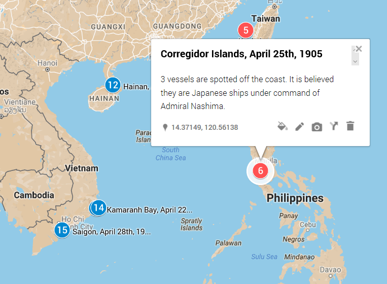

Fleet Tracking

Please click here to access my full data visualization.
My serial question is, “Where were the Russian and Japanese fleets during the year of 1905?” I am asking this question because the Russo-Japanese war occurred during this time and the two military powers engaged in quite a bit of naval combat. We know the Japanese eventually won the war and we are aware of the major battles that occurred at sea. The information in the Egyptian Gazette can provide us with a wealth of ship names, smaller skirmishes, admirals and fleet movements that would otherwise go unmentioned in most historical collections. Querying the Digital Egyptian Gazette certainly produced an impressive micro-historical account of what happened on the seas.
The most difficult part of querying for this data was the large amount of inaccurate or conflicting information. With the recent advent of the wire system, naval news was rather hard to come by and often the wire reports would be delayed and coming from a variety of sources. Havas, Reuter and other correspondents would all have their available naval information published a day or two after the actual events transpired. I'd have to comb through these clumps of naval news, cross checking conflicting reports and back-tracking to figure out the date that events transpired as opposed to when they were reported. On several occasions, information from one day would be edited or overturned in a publication one to two days later.
I searched the text for terms such as: “navy”, “Rodjestvensky”, “Togo”, “fleet” and “battle”. After searching with each key word, I search through the text XPath finds and collect each piece of naval information that relates to my question. I then transcribe the date, location and details of what occurred onto paper or a word document. Then, using Google Maps, I plot points at the various locations of naval action and tag them with a description of the available information. The points are numbered in order of date to provide logical progression of fleet movements.
The various points that I record are organized into three different layers on the map. The first layer is for illustrating the movements of the Russian fleet, which is colored blue. The second layer is for instances involving the Japanese fleet and those points are colored red. The third and final layer is colored purple and reserved for points of engagement between the Russians of the Japanese. The three layers can be added and removed as the viewer pleases, allowing for dense areas of the map to be cleaned up.
As the project came together I noticed that the Russians seem to have their fleet far much more spread out than the Japanese did, likely making their battle groups smaller and more susceptible to the larger collections of Japanese forces. The Russians appear to have had the majority of their fleet stationed in the North Sea, the Baltic and the Mediterranean. According to data not in the Digital Egyptian Gazette, the main fighting force of the Baltic Fleet led by Rodjestvensky sailed from the North Sea around Africa to Madagascar. After the devastating Russian defeat at Port Arthur, a smaller portion of the Baltic Fleet that had remained near the North Sea departed for the Mediterranean. From there, they moved to confront the Japanese threat by traveling East through the Suez Canal to Madagascar where they then met up with Rodjestvensky. Throughout the year, there were frequent reports of small groupings of Russian warships that were detached from main forces moving from harbor to harbor, searching for repairs, coal or mercenaries to join their cause. Essentially, it seems that the Russians were split into fragmented groups that coordinated poorly. Conversely the Japanese were already well established and concentrated in the far East and had most of their military vessels consistently in large battlegroups.
Naturally, most of the action occurred near contested territory in China, Japan and the Eastern coast of Russia. Significant battles were fought in this region, such as the Russian defeat at Port Arthur and then again in the Korean Straits, an event which left Admiral Rodjestvensky devastated. This battle in the Korean Straits, also known as the Battle of Tsushima, resulted in the destruction or capture of the majority of the Russian navy. According to the Gazette, the Russians were taking the risky route through the straits with the hopes of reaching the port of Vladisvostok. They traveled at night to avoid detection but in compliance with the rules of war, the trailing Russian hospital ships left their lights on which alerted the Japanese to the Russian presence. It is not surprising that the Russians were defeated so horribly by the Japanese with twenty-two of their ships sunk or captured. The Japanese only lost three torpedo boats in that pivotal fight. That information tells us that not only were the Russian sailors inexperienced in defending and maneuvering their own ships but they were also bad at targeting their enemies.
One of the most interesting events turned up by my research was an instance where a portion of the Baltic Fleet fired upon the royal yacht of King George I of Greece while he was traveling from Denmark to France. This mishap, like the defeat at Tsushima, is excellent evidence of the inexperience of the Russian navy, which was likely a major factor in the overall Russian defeat. Couple the poor skills of the Russian military with the poor leadership of the Tsar and the Russians had a recipe for defeat.
Unfortunately, we only examined a year of the Egyptian Gazette and thus are missing a significant amount of information regarding the movements of the fleets beforehand. This made it hard to understand exactly how the fleets were distributed at the beginning of the Russo-Japanese War and how they came to be placed at the beginning of the year 1905.
Jacob Stefonek
Student
The author, a student at Florida State University, was enrolled in the digital microhistory lab in fall 2016.